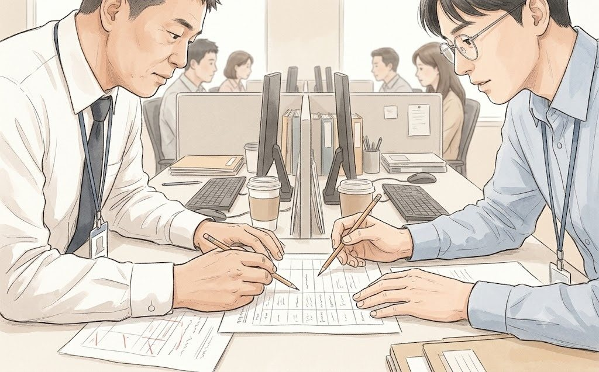
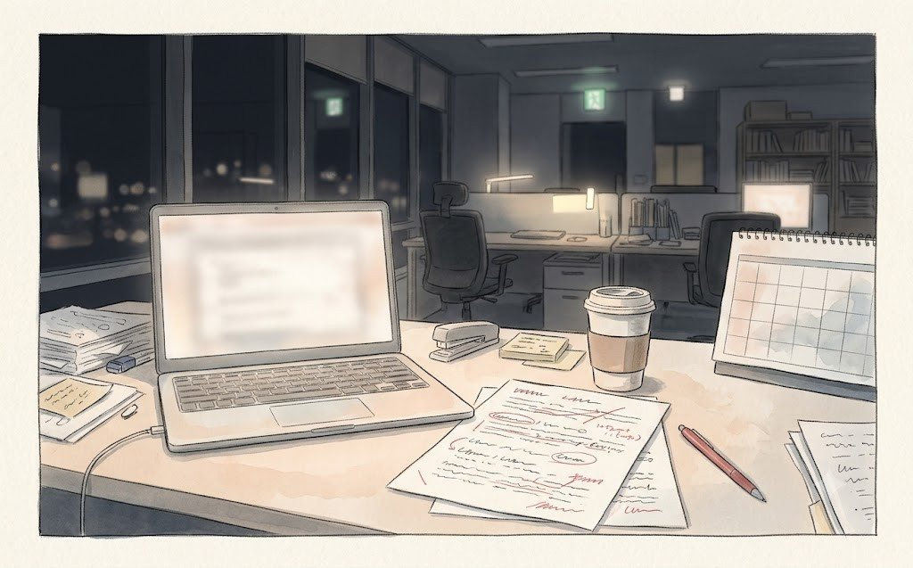
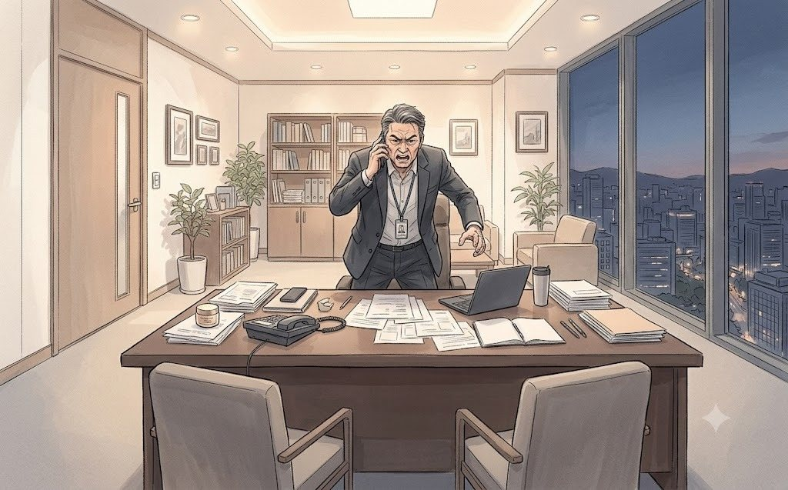

화요일 아침 9시. 17층 IT플랫폼그룹 회의실.
IT플랫폼그룹장 노승환 부장은 노트북을 열지 않았다. 대신 A4 용지 한 장을 테이블 가운데에 내려놓았다. 손글씨로 숫자 하나가 적혀 있었다.
'6'
"6개월입니다."
한지석과 이우진은 아직 의자에 엉덩이를 다 붙이지도 못한 상태였다.
"부장님, 아직 저희 요청 사항도 말씀 안 드렸는데요."
"압니다. 토요일 회의록 봤어요. 결제까지 아홉 번을 세 번으로 줄인다면서요. 6개월입니다."
노승환은 마흔다섯 살이었다. 청연에 들어온 지 18년. 그동안 브랜드몰을 세 번 갈아엎었고, 세 번 모두 마케팅이 '2주 안에'를 외치는 걸 들었다. 그의 눈 밑에는 그 18년이 고스란히 쌓여 있었다.
"그리고 미리 말씀드리면, 6개월도 제가 낙관적으로 말씀드린 겁니다."
이우진은 수첩에 '6개월(낙관적)'이라고 적었다. 적고 나서 지울까 하다가 그냥 두었다.
"이유를 여쭤봐도 될까요?"
한지석이 물었다. 목소리가 차분했다. 연구소에서 실험이 실패할 때마다 쓰던 목소리였다.
노승환은 손가락을 하나씩 접었다.
"하나, 회원 시스템이 2012년에 만든 겁니다. 비회원 구매를 붙이려면 결제 모듈부터 다시 짜야 해요. 둘, 본인 인증은 보안팀 규정입니다. 2015년에 개인정보 사고 한 번 나고 생긴 거라, 제 마음대로 못 뺍니다. 셋, 약관 일곱 개는 법무팀 요구고요. 넷, 팝업은..."
그는 잠시 말을 멈췄다.
"팝업은 사업부마다 요청이 와요. 연휘는 연휘대로, 슬로워시는 슬로워시대로. 다 자기 팝업이 첫 화면에 떠야 한대요. 제가 그거 정리하자고 회의를 몇 번 했는지 아세요?"
"몇 번이요?"
"열한 번이요. 열한 번 다 결론은 '사업부 간 협의 후 재논의'였어요."
이우진은 회의록 v1.0부터 v7.0까지를 떠올렸다. 어떤 회의는 열한 번을 해도 결론이 나지 않았고, 어떤 회의는 한나절 만에 '답변 미흡' 네 글자를 지웠다.
한지석은 한동안 말이 없었다. 그러다 노트북을 열고 화면을 노승환 쪽으로 돌렸다. 표 하나가 떠 있었다. 토요일 회의에서 그가 직접 눌렀던 아홉 단계였다.
"부장님, 이거 같이 한번 보시죠."
표에는 칸이 세 개 있었다. 단계, 내용, 그리고 '누가 만들었나'. 맨 오른쪽 칸은 비어 있었다.

"아홉 단계 중에 IT가 만든 게 몇 개인지, 같이 채워 보고 싶어서요."
노승환이 눈을 가늘게 떴다. 그리고 마지못해 화면 쪽으로 몸을 기울였다.
1단계, 이벤트 팝업. "사업부." 2단계, 스킨케어 메뉴. "UX 설계. 그건 우리." 3단계, 브랜드관. "브랜드관 따로 만들라고 한 건 사업부들이요." 4단계, 상품 상세. "그건 당연히 있어야 하고." 5단계, 로그인 강제. "보안팀이랑 마케팅. 회원 수가 KPI라서." 6단계, 회원 가입. "같은 이유." 7단계, 본인 인증. "보안팀." 8단계, 장바구니 초기화.
노승환이 말을 멈췄다.
"그건... 버그예요."
"버그요?"
"인증 끝나면 세션이 새로 생기면서 장바구니가 날아가요. 작년부터 알고 있었는데, 우선순위에서 계속 밀렸어요."
"누가 밀었어요?"
"사업부 팝업 요청이 더 급하다고 해서요."
회의실에 묘한 침묵이 흘렀다. 이우진은 웃음을 참았다. 웃으면 안 되는 상황이라는 걸 알았지만, 아홉 단계의 이유가 하나씩 밝혀질 때마다 회사라는 거대한 기계의 나사들이 보이는 것 같았다.
9단계, 쿠폰 적용 확인 창.
"이건 누가 넣었어요?"
노승환이 처음으로 웃었다.
"차장님네 팀이요."
"네?"
"온라인전략사업팀. 작년에 쿠폰 사용률 올리겠다고, 결제 직전에 무조건 쿠폰 창 띄워 달라고 요청하셨잖아요. 요청서에 백승원 부장님 결재까지 있어요."
한지석은 아무 말도 하지 못했다. 이우진은 수첩에 적었다. '9단계 — 우리.'
표의 맨 오른쪽 칸이 다 채워졌다. 사업부 넷, 보안 하나, 마케팅 둘, 우리 팀 하나, 버그 하나. IT가 혼자 만든 건 메뉴 구조 하나뿐이었다.
"부장님."
한지석이 노트북을 덮었다.
"6개월 걸리는 일은 6개월 동안 하시죠. 그건 제가 사장님께 그대로 말씀드리겠습니다."
"그럼요?"
"2주 안에 할 수 있는 것만 골라 보고 싶습니다. 이 아홉 개 중에서요."
노승환은 한지석을 오래 쳐다봤다. 그리고 의자에 등을 기댔다.
"18년 동안 마케팅이 저한테 '2주 안에 해 달라'고 한 적은 수백 번이에요. 근데 '2주 안에 할 수 있는 걸 같이 고르자'고 한 사람은 처음입니다."
그날 오전, 두 사람은 표 앞에서 세 시간을 보냈다. 이우진은 커피를 네 번 날랐다.
2주 안에 할 수 있는 것.
장바구니 버그. "사흘이면 고쳐요. 원래 했어야 하는 일이에요." 쿠폰 확인 창. "이건 우리가 빼면 돼요." 한지석이 말했다. "백 부장님께는 제가 말씀드릴게요." 이벤트 팝업. "기술적으로는 30분. 정치적으로는 6개월." 노승환이 말했다.
"팝업은 사업부 동의만 받으면 되는 거죠?"
"동의만 받으면요. 근데 그 동의를 열한 번 못 받았다니까요."
"이번에는 사장님 회의 안건이라고 하면 다를 수도 있잖아요."
노승환은 어깨를 으쓱했다. 해 보라는 뜻이었다.
로그인 강제와 회원 가입은 비회원 간편 구매로 대신하기로 했다. 결제 모듈을 다시 짜는 대신, 외부 간편결제를 붙이는 방법이 있었다. "보안 심의가 2주 걸려요. 근데 정보보안그룹 모태준 부장이 제 입사 동기예요." 노승환이 말했다. 처음으로 그의 목소리에 장난기가 묻어 있었다.
11시 50분. 한지석의 휴대폰에 권재혁의 메시지가 왔다.
한지석은 휴대폰을 내려놓고 노승환을 봤다.
"부장님, 보안 심의 2주 가능하다고 가정하고 일단 보내겠습니다. 틀리면 제가 책임지고 고칠게요."
"그렇게 일하시는 분이었어요?"
"저도 오늘 처음 그렇게 일합니다."
노승환이 웃었다. 표는 그 자리에서 80%의 모습으로 상무실에 보내졌다. 5분 뒤 답장이 왔다.

점심 무렵, 표 아래에 새 줄이 생겼다.
'2주 목표: 9단계 → 5단계.'
세 번은 아니었다. 하지만 아홉도 아니었다.
"상무님은 세 번이라고 약속하셨는데요."
이우진이 조심스럽게 말했다. 한지석은 표를 저장하며 대답했다.
"상무님은 그 자리에서 6개월이라는 말을 들으면 안 됐어. 그래서 세 번이라고 하신 거야. 다섯 번이 진짜 숫자고."
"그럼 사장님께는요?"
"진짜 숫자를 드려야지. 그리고 나머지 두 번은 6개월짜리라고 솔직하게."
점심을 먹고 돌아오는 길, 한지석은 백승원의 자리에 들렀다. 이우진이 뒤를 따랐다.
"부장님, 작년에 결제 직전 쿠폰 창 요청하신 거 기억나세요?"
백승원은 모니터에서 눈을 떼고 한참 생각했다.
"아, 그거. 쿠폰 사용률 올려야 한다고 해서. 그때 KPI가 그거였잖아."
"그게 아홉 단계 중 하나예요."
"뭐?"
"9단계요. 맨 마지막. 결제 버튼 바로 앞."
백승원의 입이 천천히 벌어졌다. 그리고 의자에 등을 기대며 천장을 봤다.
"그러니까... 내가 범인이네."
"범인이라기보다는..."
"아냐, 범인 맞아. 내가 결재했어."
그는 웃음을 터뜨렸다. 너무 크게 웃어서 옆 파트 사람들이 고개를 들었다. 한참 웃던 그가 눈가를 닦으며 말했다.
"빼. 당장 빼. 사장님이 물어보시면 내 이름 대."
"부장님 이름은 안 댈게요."
"왜?"
"우리 팀이 만든 거라고만 할게요. 그게 사실이니까요."
백승원은 한지석을 잠깐 쳐다봤다. 그리고 고개를 끄덕였다. 회사에서는 사실을 말하는 방법도 여러 가지였다. 이우진은 그 차이를 이번 주에만 세 번째로 배우고 있었다.
오후 1시 반. 노승환에게서 메시지가 왔다.
한지석은 그 메시지를 이우진에게 보여 주며 웃었다. 회사의 일은 결국 이렇게 풀렸다. 결재 문서가 아니라 점심 한 끼와, 아무도 하기 싫은 발표 하나로.
오후 2시. 이우진은 사업부 여섯 곳에 메일을 보냈다.
전송 버튼을 누르고, 그는 의자에 기대 숨을 내쉬었다. 첫 번째 일이 끝났다고 생각했다.
10분 뒤, 권재혁의 책상 전화가 울렸다.
이우진의 자리에서도 수화기 너머의 목소리가 들렸다. 그 정도로 큰 목소리였다.
"권 상무! 연휘 팝업을 내리라고요? 그리고 이건 또 뭡니까. 브랜드몰에 연휘가 10% 할인으로 떠 있는데, 이거 누가 한 짓이에요?"
엄기태 상무였다.

이우진의 얼굴에서 핏기가 빠졌다. 어제 오후, 팝업을 내리는 대신 첫 구매 고객에게 쿠폰을 주자는 아이디어를 시험해 보려고 쿠폰 하나를 등록했었다. '테스트용, 슬로워시 한정.' 그렇게 설정했다고 생각했다.
그는 떨리는 손으로 관리자 화면을 열었다.
쿠폰 적용 범위: 전체 브랜드.
(EP6 끝)